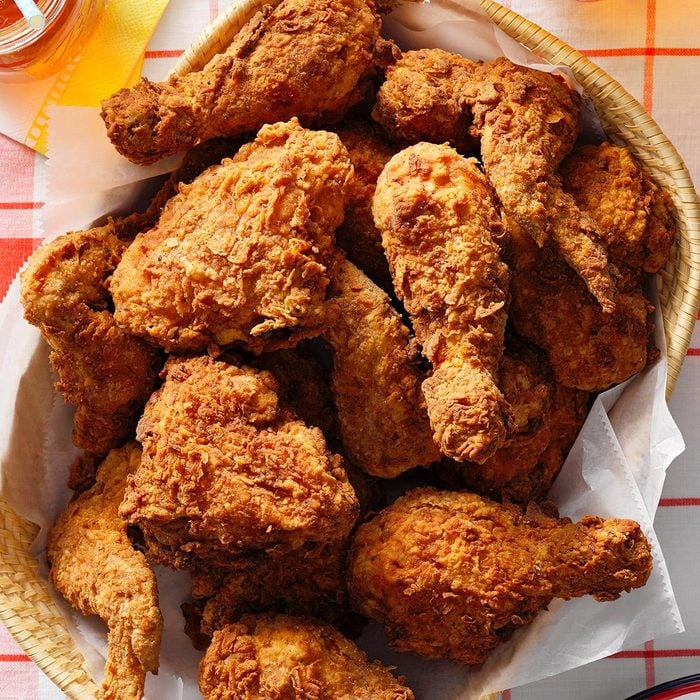

Fried Chicken

Description
A super crispy and tender fried chicken recipe that is bound to make
your mouth water. I've been using this recipe for years and have gotten
several people asking for the recipe, so here it is!
Ingredients
- Panko Bread
- 2lbs of Chicken
- 1 cup of Milk
- 2 Eggs
- 5 cups of vegetable oil
Steps
- First, prepare two bowls: one for the panko breadding and one of the milk and egg mixture.
- Dip the chicken thoroughly in the wet mixture, then cover it up using the panko bread
- Once all the chicken is well coated, bring the oil to medium heat.
- Place the chicken into the oil and fry for around 15 minutes. Be careful of oil splashing when you put in the chicken!
- Afterwards, plate and serve!